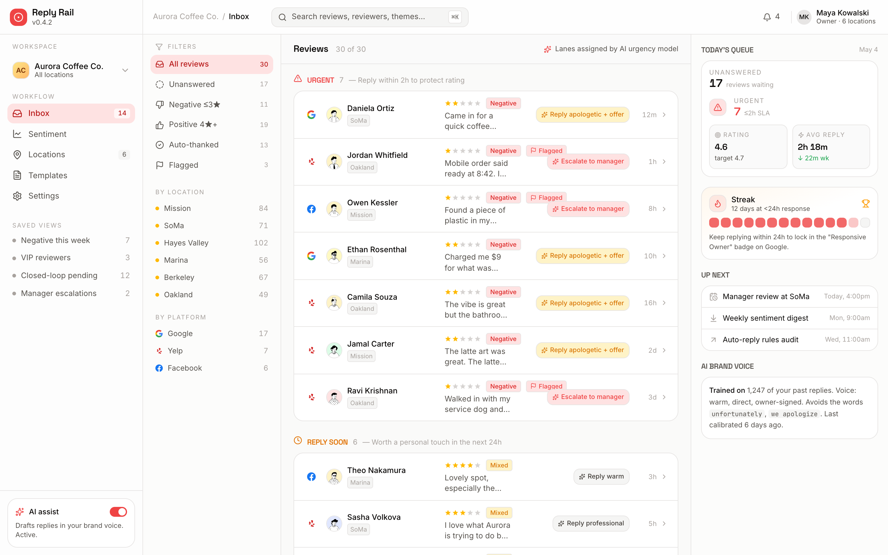
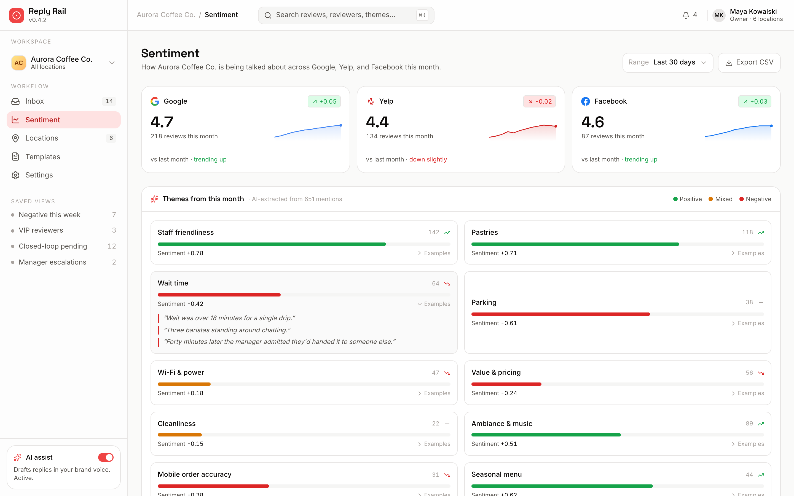
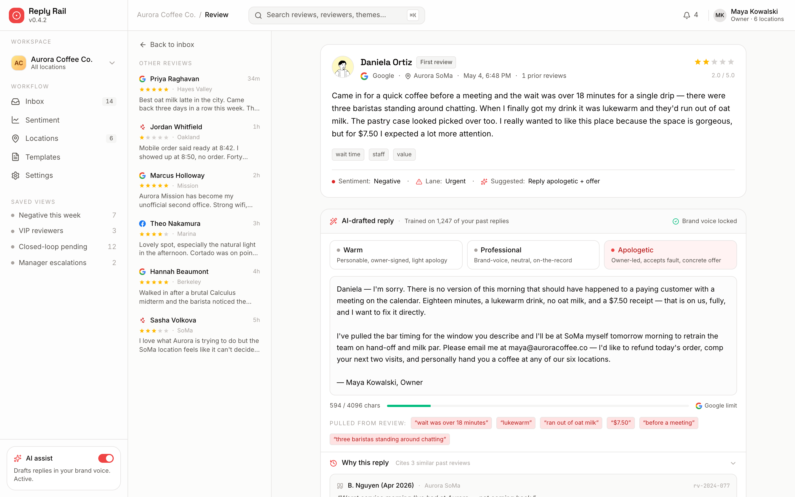

Step one
Pull
New Google, Yelp and Facebook reviews stream into one queue. The AI urgency model reads each and files it in a lane.
- Sorted into Urgent, Reply soon, Auto-thanked, Quiet
- Themes tagged per review
Reply Rail pulls your Google, Yelp and Facebook reviews into a single queue, drafts a tone-matched reply for every one, and shows you what people love — so you stay under 24 hours without writing a word.
An AI urgency model reads each new review as it arrives and drops it into a lane, so you always see the 2-hour fires before the thank-yous.
Low-star or flagged reviews to answer within 2 hours to protect the rating.
Mixed and mid-star reviews worth a personal touch inside the day.
Glowing reviews that get a warm, on-brand thank-you the moment they land.
Star-only ratings with no comment — noted, tallied, and left in peace.
Reply Rail does the reading and the writing. You do the one thing only an owner can — decide it sounds right, and hit send.
New Google, Yelp and Facebook reviews stream into one queue. The AI urgency model reads each and files it in a lane.
A reply is written in your brand voice, grounded in the exact words of the review, and fitted to each platform's character limit.
Skim it, tweak a word if you like, and post — right back to the platform it came from. Under 24 hours, every time.
Beyond individual replies, Reply Rail reads every review together: the topics people keep raising, how ratings move over 12 weeks, and how each location is really doing.
All three platforms, one chart.
This is the actual product a multi-location coffee chain runs every morning.
Every review across Google, Yelp and Facebook, sorted by urgency the moment it arrives. Filter by platform, location or sentiment — and see today's queue at a glance.

Per-platform ratings with month-over-month movement, and a panel of AI-extracted themes coloured by sentiment — so the wait-time complaint surfaces before it costs you a star.

Open any review to see the drafted response beside three tone presets, the phrases it pulled from the review, and a live character count against the platform's limit.

See Reply Rail on your own Google, Yelp and Facebook reviews. We'll walk you through the inbox, the drafting, and the sentiment trends for your locations.
Built for multi-location local businesses. Now running for an F&B chain under NDA.